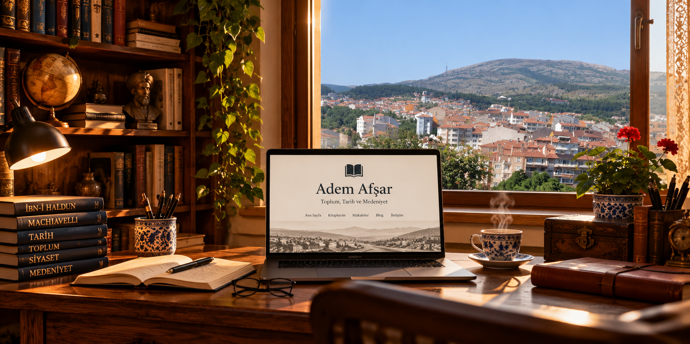
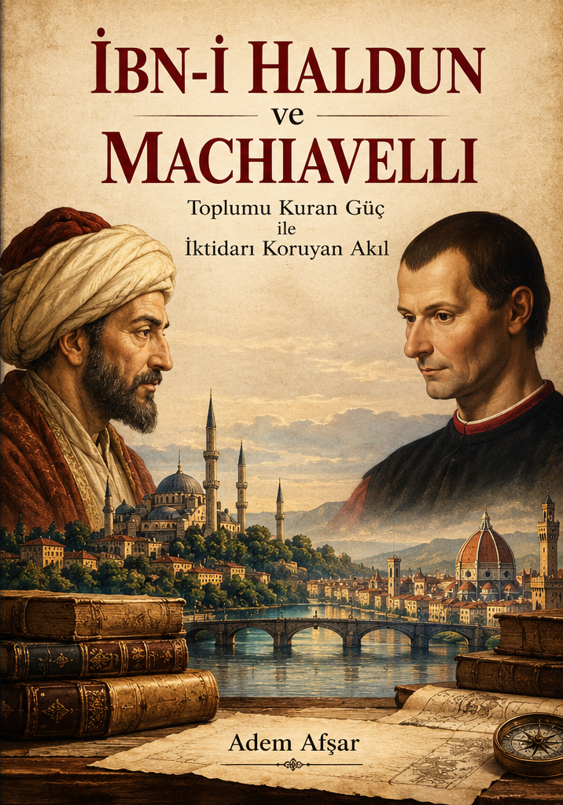

Birlikte düşünmek, yeniden değerlendirmek
Toplumu anlamak, yalnızca insanların ne yaptığını değil; hangi şartlarda, hangi ihtiyaçlarla ve hangi ilişkiler içinde hareket ettiklerini de incelemeyi gerektirir.
Çalışmalarımda toplumun kuruluşunu, dayanışmanın güce dönüşmesini, kurumların oluşumunu ve zamanla değişen insan davranışlarını ele alıyorum. Tarihi yalnızca geçmişte yaşanmış olayların sıralaması olarak değil, bugünü anlamamıza yardımcı olabilecek bir gözlem alanı olarak değerlendirmeye çalışıyorum.
İbn-i Haldun'un toplum ve asabiyet anlayışı ile Machiavelli'nin iktidar ve siyasal gerçekçilik yaklaşımı, çalışmalarımın önemli düşünsel dayanakları arasındadır. Bu düşünürlerden yararlanırken kavramları tarihsel bağlamlarında incelemeyi ve günümüz koşullarında yeniden sınamayı önemsiyorum.
Bu site, kitap çalışmalarımı, makalelerimi ve geliştirmekte olduğum düşünceleri paylaşmak; okurlarla eleştirel ve yapıcı bir düşünce alışverişi kurmak amacıyla hazırlanmıştır.
Kitap çalışmaları
Toplumun kuruluşundan iktidarın işleyişine uzanan iki çalışma: tarihsel gözlem, kavramsal karşılaştırma ve eleştirel değerlendirme.
İbn-i Haldun'u Anlamak
Toplum, dayanışma ve medeniyet üzerine bir inceleme
İbn-i Haldun'un umran, asabiyet, şehir, üretim ve iktidar gözlemlerini tarihsel bağlamında ele alan bir düşünce çalışmasıdır.
Çalışma, toplulukları birlikte hareket edebilir kılan bağları ve bu bağların değişen şartlarda nasıl dönüşebildiğini sorgular.
Kitap çalışması tamamlanmıştır. Yayın bilgileri, kesinleştiğinde bu alana eklenecektir.

İbn-i Haldun ve Machiavelli
Toplumu Kuran Güç ile İktidarı Koruyan Akıl
Toplumsal dayanışmanın siyasal güce dönüşmesi ile iktidarın kendisini koruma biçimleri arasındaki ilişkiyi karşılaştırmalı olarak inceler.
İki düşünürün kavramlarını karşı karşıya getirerek kuruluş, kurumsallaşma, siyasal dayanıklılık ve değişen şartlara uyum meselelerini araştırır.
Kitap çalışması son düzenleme aşamasındadır. Yayın tarihi henüz duyurulmamıştır.
Düşünce dünyası
Bazı kavramları yalnızca açıklamakla yetinmek yerine, onları tarihsel ve toplumsal örnekler üzerinden sınamayı amaçlıyorum. Aşağıdaki başlıklar bu düşünsel alanın temel çalışma konularındandır.
Bu başlıklar yazarın çalışma ve düşünce alanlarını tanıtır; her biri için ayrı bir makale veya yayın bulunduğu anlamına gelmez.
Makaleler ve denemeler
Toplum, ekonomi, felsefe, tarih ve insan davranışları üzerine yazılar bu bölümde bir araya getirilecektir.
Yapay Zekâ Rekabetinden Düşünsel Sinerjiye
İnsan–Yapay Zekâ İlişkisinde Üretim Kapasitesinin Genişlemesi
Yapay zekâ alanındaki rekabeti yalnızca şirketlerin birbirlerine üstünlük iddiaları üzerinden değil, insanın düşünme ve üretme kapasitesine kazandırdığı imkânlar üzerinden değerlendiren bir inceleme.
Makale · 30 Ekim 2026Makaleyi oku
İnsan, Toplum ve Sorumluluk
Bireysel ihtiyaçlar ile ortak yaşamın gerekleri arasındaki ilişki; sorumluluğun yakın çevreden daha geniş toplumsal alanlara uzanması.
Çalışma konusuİrade ve Gerçek Özgürlük
İnsanın karar verme kapasitesi, çevresinin etkisi ve kendi davranışlarını değerlendirme imkânı üzerine düşünceler.
Çalışma konusuToplumu Kuran Güç ve İktidarı Koruyan Akıl
İbn-i Haldun ve Machiavelli'nin yaklaşımlarından hareketle toplumsal dayanışma, siyasal kuruluş ve iktidarın devamlılığı arasındaki ilişkinin incelenmesi.
Kitap çalışmasıyla bağlantılı konuYeni yazılar yayımlandıkça başlıkları ve tam metin bağlantıları bu bölüme eklenecektir.
İletişim
Kitap çalışmaları, makaleler ve düşünsel konular hakkında iletişim kurmak veya görüş paylaşmak için aşağıdaki e-posta adresini kullanabilirsiniz.
Eserlerin kullanımı ve yayın izinleri
Bu sitede yayımlanan makale, deneme ve diğer özgün metinlerin eser sahipliği Adem Afşar'a aittir. İçeriklerin çevrim içi erişime açık olması, bunların serbestçe yeniden yayımlanabileceği veya ticari amaçla kullanılabileceği anlamına gelmez.
Bilimsel, eleştirel ve haber verme amaçlı alıntılar, ilgili mevzuatın izin verdiği sınırlar içinde ve eser ile yazar adı açıkça belirtilerek yapılabilir. Bir yazının tamamının veya önemli bir bölümünün başka bir yerde yayımlanması; çoğaltılması, çevrilmesi, uyarlanması, derlenmesi ya da ticari kullanımı için, kanuni istisnalar saklı kalmak üzere, önceden yazılı izin alınmalıdır.
Yayınevleri, akademisyenler, araştırmacılar, eğitim ve kültür kurumları, basın kuruluşları ve diğer ilgililer; basılı veya dijital yayın, ders/etkinlik kullanımı, çeviri, yeniden basım ve diğer lisans talepleri için e-posta yoluyla başvurabilir.
İzin değerlendirmesinde kullanım amacı, kullanılacak bölüm, mecra, basım/adet veya erişim kapsamı, ülke, süre, ücret ve münhasırlık durumu ayrıca kararlaştırılır. Yazılı onay verilmedikçe izin verilmiş sayılmaz.
© 2026 Adem Afşar. Tüm hakları saklıdır. Bu bildirim, yürürlükteki yasal alıntı ve kullanım istisnalarını ortadan kaldırmaz.